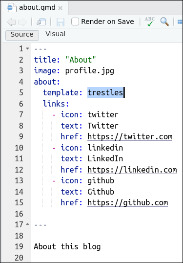

Código
---
title: "Mi docencia"
---
Mi docencia es:
## curso 2021-2022
- [Econometría](/pdfs/econometria.pdf)
## curso 2022-2023
- [Algebra](/pdfs/econometria.pdf)_quarto.yml
En la figura siguiente, en el lado izquierdo puedes ver el contenido original del fichero _quarto.yml. Al final dejaremos este fichero como la figura de la derecha.

_quarto.yml
_quarto.yml_quarto.yml original
_quarto.ymlComo puedes ver arriba en la Figura 1, el fichero _quarto.yml original tiene 3 partes:
La primera parte del fichero _quarto.yml (lineas 1 y 2) simplemente específica que el proyecto es para hacer una página web (type: website). Esta primera parte del fichero _quarto.yml no lo vamos a tocar, lo vamos a dejar igual. Sí, en realidad, un blog es una página web en la que la “Home page” o “landing page” es un poco especial, es un poco especial porque es una página con un listado de posts, PERO, en definitiva un blog es una página web.
La segunda parte del fichero _quarto.yml (lineas 4 a 12) sirve para decidir la estructura de la página web (en nuestro caso del blog). Esta segunda parte tiene 2 secciones
title: “blog_prueba_00”: aquí podemos cambiar el título de nuestro blog
navbar: aquí podemos cambiar la estructura de la barra de navegación del blog. En el archivo original se especifica que los elementos/pestañas de navegación se situan a la derecha y que habrán 3 links o pestañas: About y 2 iconos que nos llevaran a Github y a Twitter
En la tercera parte del fichero _quarto.yml se especifica el formato. Como toda página web el formato es html. Además se especifica un theme y un fichero .css que nos permitirán modificar el aspecto estético del blog.
_quarto.yml modificadoPor ejemplo, podemos modificar el fichero _quarto.yml hasta dejarlo como:
_quarto.ymlComo puedes ver arriba en la Figura 2, al compararla con la Figura 1, hemos modificado el fichero _quarto.yml. Concretamente:
La primera parte del fichero _quarto.yml (lineas 1 y 2) la hemos dejado igual. Seguimos queriendo hacer una web/blog.
La segunda parte del fichero _quarto.yml (ahora lineas 4 a 19) si la hemos modificado:
Hemos cambiado el título del blog, ahora title: "Mi blog (aún en pruebas)". Está en la linea 5.
En la navbar (lineas 6 a 19): hemos cambiado la estructura de la barra de navegación del blog. Hemos hecho 3 cosas:
Hemos añadido un logo a la barra de navegación con logo: profile.jpg (linea 7).
En la parte derecha de la barra de navegación hemos añadido un icono para el email (icon:envelope) y hemos modificado el texto que se muestra en la pestaña about, esto último lo hemos hecho con text: "About me" en las lineas 9 y 10.
Finalmente, hemos añadido una pestaña nueva (lineas 18 y 19) pero está vez a la izquierda de la barra de navegación: left: (linea 17). Fijate que esta nueva pestaña llamada “Docencia” creada con- text: "Docencia" (linea 18), esta referenciando a un archivo que no existe (aún) en el Qproject, está referenciando con href: docencia.qmd (linea 19) al archivo docencia.qmd. Lógicamente tendremos que crear este archivo.
En la tercera parte del fichero _quarto.yml hemos cambiado el theme: minty y hemos añadido las lineas 25 toc: true que creará índices en las páginas de la web/blog1, mientras que con highlight-style: a11y se cambia el formato visual de los chunks de código que hayan en la página web.
docencia.qmd
quarto.yml(linea 19) se hace referencia al archivo docencia.qmd, así que tendremos que crearlo. Para ello:_quarto.yml. Como ves, tal como hemos dicho, hemos modificado las pestañas de la barra de navegación (por ejemplo ahora tenemos la pestaña Docencia a la derecha de la barra de navegación) y la apariencia (theme) del blog ha cambiado (recuerda theme: minty): ahora el color de la barra es verdecito.index.qmd
En la figura siguiente, en el lado izquierdo puedes ver el contenido original del fichero index.qmd. Al final dejaremos este fichero como la figura de la derecha. Como verás solo vamos a hacer cambios en la primera linea: cambiaremos el título.

index.qmd
index.qmdComo ves, index.qmd es un fichero (nuestra “Home Page”) sin contenido aparente: aparte del yamlno hay nada más. Sin embargo, justamente en el yaml especifica, con la opción listing: (linea 3), que la página va a ser un listado; concrétamente un listado del contenido que haya en la carpeta posts; o sea, un listado con los posts que haya en la carpeta posts.
Sí, con el trozo contents: posts (linea 4), se está especificando la carpeta donde estará alojado el contenido de los posts. Si miras la carpeta posts verás 2 subcarpetas, una para cada uno de los 2 posts del blog.
Ya hablaremos de las subcarpetas donde está el contenido de los posts más adelante, pero adelanto que en cada carpeta hay un archivo index.qmd con el contenido de cada post.
index.qmd para dejarlo como:---
#title: "Mi listado de posts" #- yo casi prefiero que no ponga nada
listing:
contents: posts
#- listing options: https://quarto.org/docs/websites/website-listings.html#listing-options
#- https://quarto.org/docs/websites/website-listings.html#sorting-items
sort: "date desc"
#- https://quarto.org/docs/websites/website-listings.html#listing-types
type: default #- opciones: {default, grid, table}
categories: true
sort-ui: false
filter-ui: false
date-format: long
page-layout: full
title-block-banner: true
image: imagenes/thumbnail.jpg
---about.qmd
about.qmd. En la figura siguiente, en el lado izquierdo puedes ver el contenido original del fichero y en la derecha como lo dejaremos. Como verás solo vamos a hacer cambios en la quinta linea: cambios la plantilla predefinida.
about.qmd
about.qmdyaml se activa la opción about: (linea 3), entonces Quarto tiene disponibles unas plantillas para crear About’s pages. Aquí tienes la documentación oficial sobre estas plantillas. Como puedes ver aquí hay 5 plantillas: jolla, trestles, solana, marquee y broadside.styles.css
Puedes cambiar la apariencia estética del blog y dejarlo a tu gusto usando los themes prefedinidos en Quarto o puedes usar el archivo styles.css2
De momento, el archivo styles.css está vacio3
El tuneado del blog con .css lo veremos con algo más de detalle en el tutorial nº 8, ahora mismo solo haremos unas modificaciones mínimas: voy a justificar el texto4.
Build > Render Website,(Algunos artículos sobre creación de blogs en Quarto)
La opción toc: true creará un indice (o toc) en las páginas en las que hayan titulos de primer(#), segundo(##) o tercer nivel(###).↩︎
Veremos en el tutorial nº 8 que también podremos usar archivos.scss↩︎
En realidad no está vacio, pero solo tiene un comentario.↩︎
Esta es una modificación que tiene muchas criticas, pero, que se le va a hacer, a mi me gusta el texto jsutificado.↩︎
@online{j.pérez,
author = {Pedro J. Pérez and Pedro J. Pérez},
editor = {},
title = {Tuneado básico del blog con Quarto},
date = {},
url = {https://perezp44.github.io/taller.primer.blog//taller/03_taller_tuneado-basico.html},
langid = {es},
abstract = {En el anterior tutorial creamos un blog básico con Quarto.
Ahora vamos a adaptar el blog a nuestras necesidades (tunear)}
}